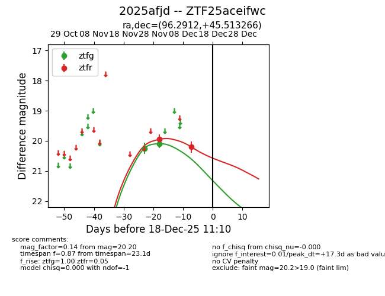
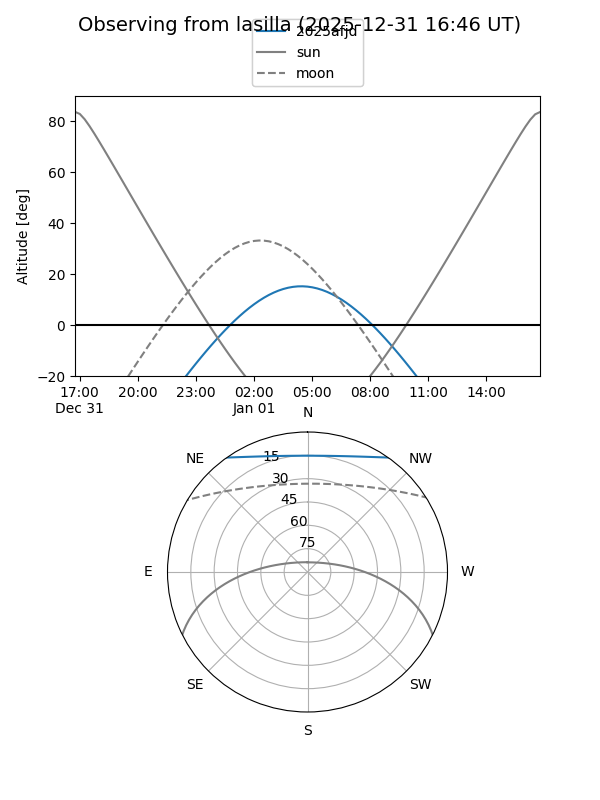
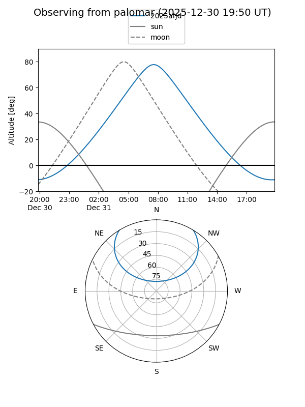
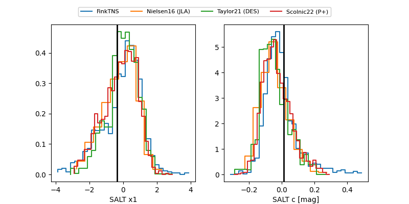

2025afjd
Target 2025afjd at 2025-12-31 16:59
Aliases and brokers:
FINK:
Lasair:
ALeRCE:
TNS:
YSE:
alt names
ZTF25aceifwc (ztf,fink_ztf)
2025afjd (tns,yse)
Coordinates:
equatorial (ra, dec) = 96.2912,+45.51327
equatorial (HMS+DMS) = 06:25:09.90,+45:30:47.76
galactic (l, b) = (168.9652,+14.71238)
Flags:
Photometry:
last ztfg=20.09, ztfr=20.20
2 ztfg, 2 ztfr detections
Lightcurve

Visibility


Additional plots
